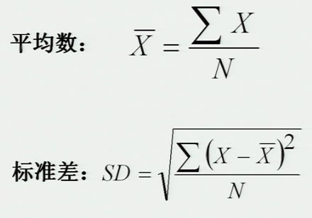

在简单随机抽样中，每个人或抽样单位都有相同的机会作为常模中的一部分。
有时在总体数目为N的情况下，若要选择K分之一的被试作为样本，则可以在抽样范围内选择每个第K个人来构成样本。
有时总体数目较大，无法进行编号，而且群体又有多样性，这时可以先将群体进行分组，再在组内进行随机取样。
它是先将目标总体按某种变量（如年龄）分成若干层次，再从各层次中随机抽取若干被试，最后把各层的被试组合成常模样本。包括分层比例抽样和分层非比例抽样
它告诉人们多大的儿童具备什么能力或行为就表明其发育正常，相应能力或行为早于某年龄出现，说明发育超前，否则即为发育滞后。
已知某儿童完成比内－西蒙的测题如下：
| 6岁以下 | 全部通过 |
| 7岁 | 通过4题 |
| 8岁 | 通过3题 |
| 9岁 | 通过2题 |
| 9岁以上 | 均未通过 |
则：智龄=6岁+4x2(月)+3x2（月）+2x2（月） |
|
百分位数的计算 |
百分位数的计算可根据直线内插法进行。例如，高考的最高分为695分，其百分等级为100，最低分为103分，百分等级为1，百分等级为80的百分位数（PP）可以用以下公式计算得出： |
| 所以，要想知道在全国录取20%的考生，总分数线就应该为575分。 |
四分位数和十分位数
百分位数是将量表分成100份，而四分位数是将量表分成四等份，相当于百分等级的25%、50%和75%对应的三个百分分成的四段。十分位数也可以依此类推出，1%～10%为第一段，91%～100%为第十段。
标准分数是将原始分数与平均数的距离以标准差为单位表示出来的量表。因为它的基本单位是标准差，所以叫标准分数。
| Z=A+BZ |  |
比率智商
离差智商
必须指出，从不同测验获得的离差智商只有当标准差相同或接近时才可以比较，标准差不同，其分数的意义便不同。
转换表表示法
一个转换表显示出一个特定的标准化样组的原始分数与其相对应的等值分数——百分位、标准分数、T分数或者其它任何分数。因此测验的使用者利用转换表可将原始分数转换为与其对应的导出分数，从而对测验的分数作出有意义的解释。
剖面图表示法
剖面图是将测验分数的转换关系用图形表示出来。从剖面图上可以很直观地看出被试在各个分测验上的表现及其相对的位置。